#6863 Voll auf die Nüsse
Alternativ: Dodgeball: A True Underdog Story
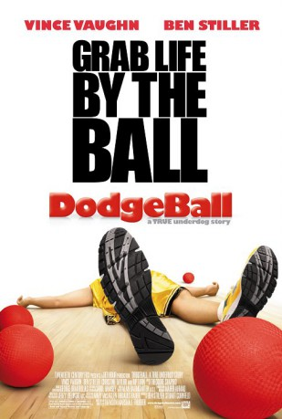 
 IMDB-Wertung: 6.7 / 10
IMDB-Wertung: 6.7 / 10  Metascore: 0
Metascore: 0 
White Goodman (Ben Stiller) is the owner and founder of Globo Gym, and would love nothing more than owning Average Joe's Gymnasium. Peter LaFleur (Vince Vaughn) doesn't want to lose his gym to Goodman, but can't find a way to get $50,000 in time. Peter and his gang of gym buddies think of ways to raise money, finally settling on winning a dodge ball tournament. White Goodman retaliates by creating his own dodge ball team to finish off Peter. Peter's team doesn't do too well, until legendary ADAA champ Patches O'Houlihan (Rip Torn) turns up ready to train them.
Jahr: 2004
Dauer: 92 Minuten
FSK: 6
Land: USA Studio: 20th Century FoxTonspuren:
Untertitel: Deutsch,
Auflösung: 1080p (1920x816) Größe: 7464 MB
Genre: Komödie, Sport
Regisseur:  Rawson Marshall Thurber
Rawson Marshall Thurber
Drehbuch: Rawson Marshall Thurber
Soundtrack:
Darsteller:
 Vince Vaughn als Peter La Fleur
Vince Vaughn als Peter La Fleur- 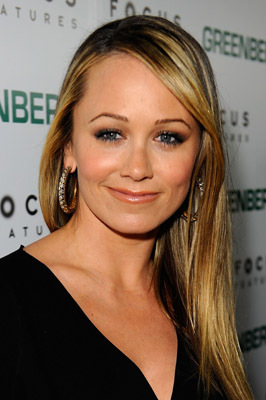 Christine Taylor als Kate Veatch
 Ben Stiller als White Goodman
Ben Stiller als White Goodman Rip Torn als Patches O'Houlihan
Rip Torn als Patches O'Houlihan Justin Long als Justin
Justin Long als Justin Stephen Root als Gordon
Stephen Root als Gordon- 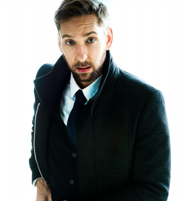 Joel David Moore als Owen
- 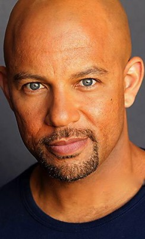 Chris Williams als Dwight
- 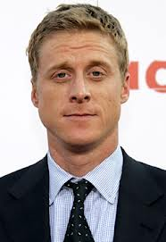 Alan Tudyk als Steve the Pirate
- 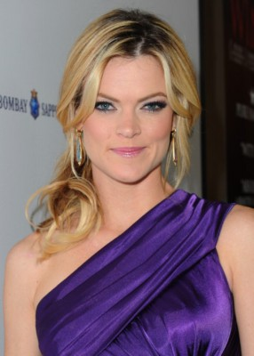 Missi Pyle als Fran
- 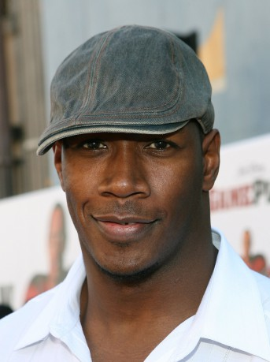 Jamal Duff als Me'Shell Jones
- 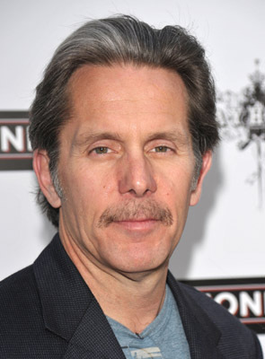 Gary Cole als Cotton McKnight
 Jason Bateman als Pepper Brooks
Jason Bateman als Pepper Brooks Hank Azaria als Young Patches O'Houlihan
Hank Azaria als Young Patches O'Houlihan- Al Kaplon als Tournament Referee
- Lance Armstrong als Lance Armstrong
- 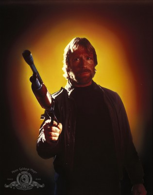 Chuck Norris als Chuck Norris
- 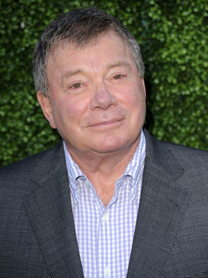 William Shatner als Dodgeball Chancellor
- 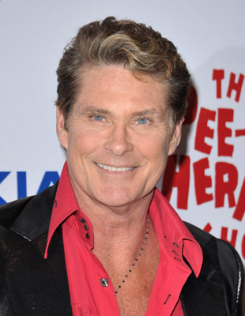 David Hasselhoff als German Coach
- Julie Gonzalo als Amber
- Trever O'Brien als Derek
- Cayden Boyd als Timmy
- Rusty Joiner als Blade
- Kevin Porter als Lazer
- 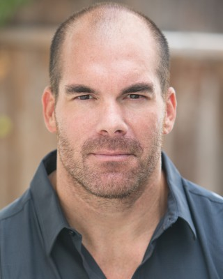 Brandon Molale als Blazer
- Suzy Nakamura als Gordon's Wife
- Lori Beth Denberg als Martha Johnstone
- 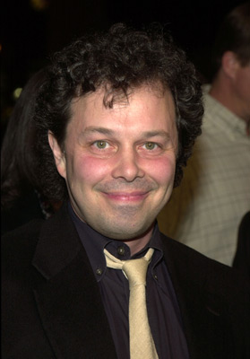 Curtis Armstrong als Mr. Ralph
- Tate Chalk als Waldorf Referee
- Amy Stiller als Keno Waitress
- 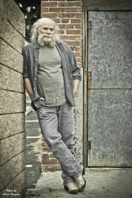 Jim Cody Williams als Weird Guy with Monster Truck
- Scarlett Chorvat als Joyce
- 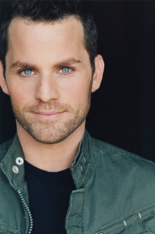 Matt Levin als Casino Worker #1
- 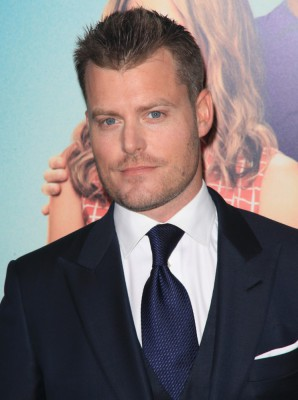 Rawson Marshall Thurber als Obnoxious Las Vegas Homophobe
- Stephen B. Turner als Frustrated Cougar
- Tim Soergel als Frustrated Cougar #2
- Priscilla Leona Horne als Naughty Nurse , uncredited
- Candice Michelle als Cheerleader , uncredited
- Julia Ensign als Cheerleader #1
- David Boyd als Cheerleader #2
- Bowd Beal als Cheerleader #3
- Jordyn Colemon als Angry Troop #417 Girl
- Hayley C. Rosales als Bernice - Crying Troop #417 Girl
- Bix Barnaba als Homeless Man
- Earl Schuman als Elderly S&M Enthusiast
- Robert 'Duckie' Carpenter als S&M Man
- Tony Daly als Ronnie
- John Kesler als Alec
- Doug Grimes als Casino Roughian
- Sik End als Friendly Bondage Master
Datei: X:\2004(N-Z)\Voll auf die Nüsse (2004, FSK6, 1920x816).mkv seit 05.09.2017
Festplatte: HD 2003-2004-2005(A-F)
 Es gibt insgesamt 54 Filme in der Gruppe '2004(N-Z)'
Es gibt insgesamt 54 Filme in der Gruppe '2004(N-Z)'